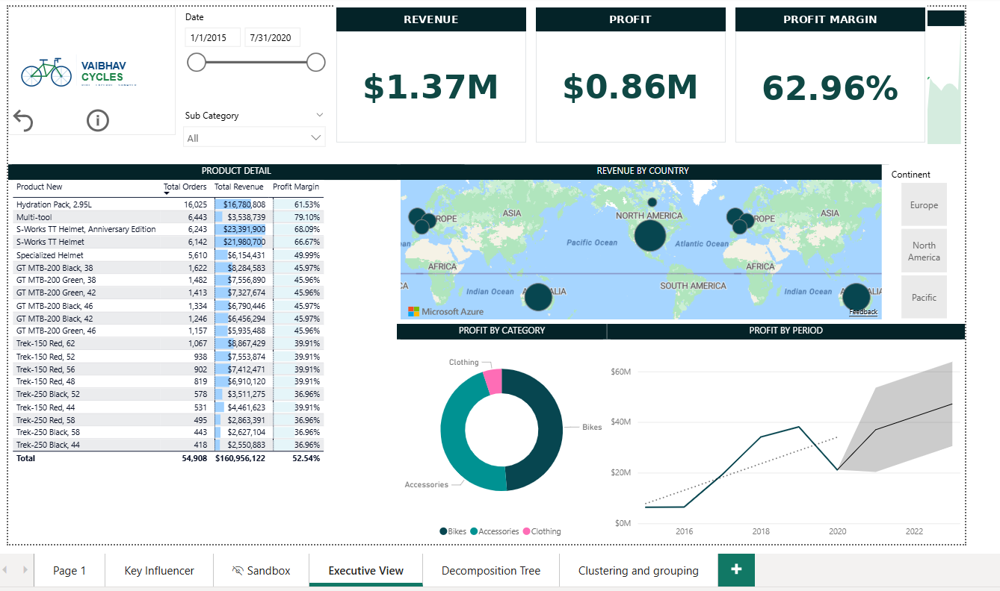
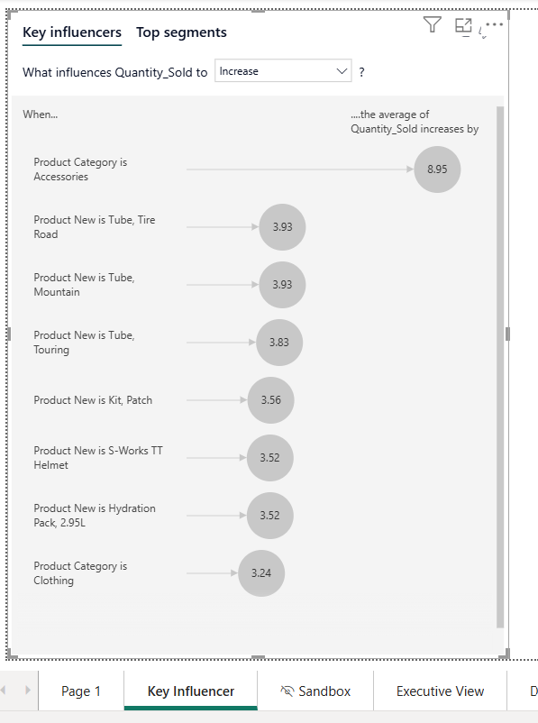
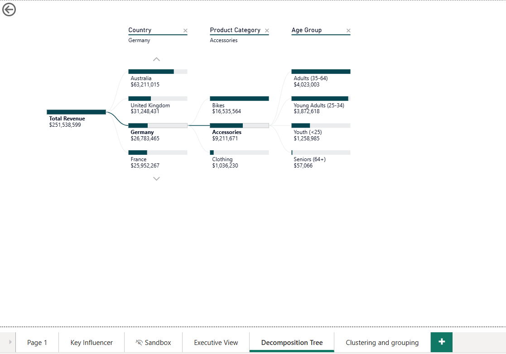
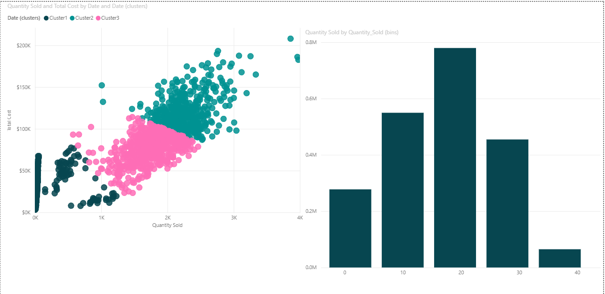

Data Analysis / Power BI
Vaibhav Cycles sells bikes, parts, and accessories across six countries. Leadership had the numbers but no fast way to read them, so I built one report that answers both how the business is doing and why.
It opens with an executive dashboard for the top line, then moves into diagnostic views that explain what drives sales, where revenue comes from, and how demand clusters. The data is a fictional dataset built for this project.
Leadership needed one screen to see how the business was doing and where the money came from. This dashboard pairs top-line KPIs with a product-level detail table, a revenue-by-country map, and profit split by category and over time.
Slicers let a manager filter by date, region, or subcategory without asking for a new report. Anyone from a store lead to the CFO gets "how are we doing, and where" in seconds. Bikes drive the most revenue; accessories carry the higher margins.

Knowing total sales is not enough, the real question is what actually moves units. This uses Power BI's Key Influencers visual, which runs a model in the background to rank the factors most tied to higher quantity sold.
It found that being in the Accessories category is the strongest lever, raising average units sold by about nine, with fast-moving items like tubes and patch kits close behind. That is a direct pointer for what to stock and promote.

When a number looks off, the next question is always "where is it coming from?" The decomposition tree is an interactive drill-down that breaks total revenue apart along whatever path you pick: country, then category, then customer age group.
You can start at $251M and click down to, say, Germany, then Accessories, then Young Adults, without writing a new query each time. It turns a static figure into a self-serve investigation.

Not every sales day behaves the same, and the business wanted the patterns found rather than guessed. Clustering groups days automatically by quantity sold and cost, alongside a chart showing how order sizes are distributed.
Three clear tiers emerge, low, mid, and high-volume days, which can guide staffing and inventory, with most activity landing in the mid-volume range.
